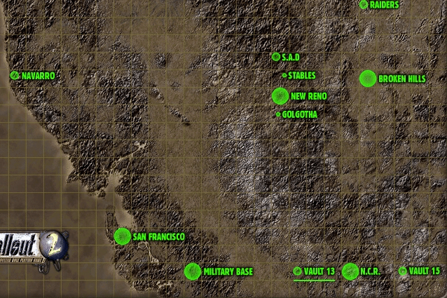
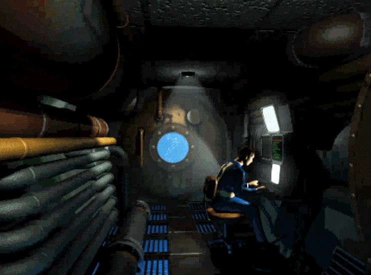
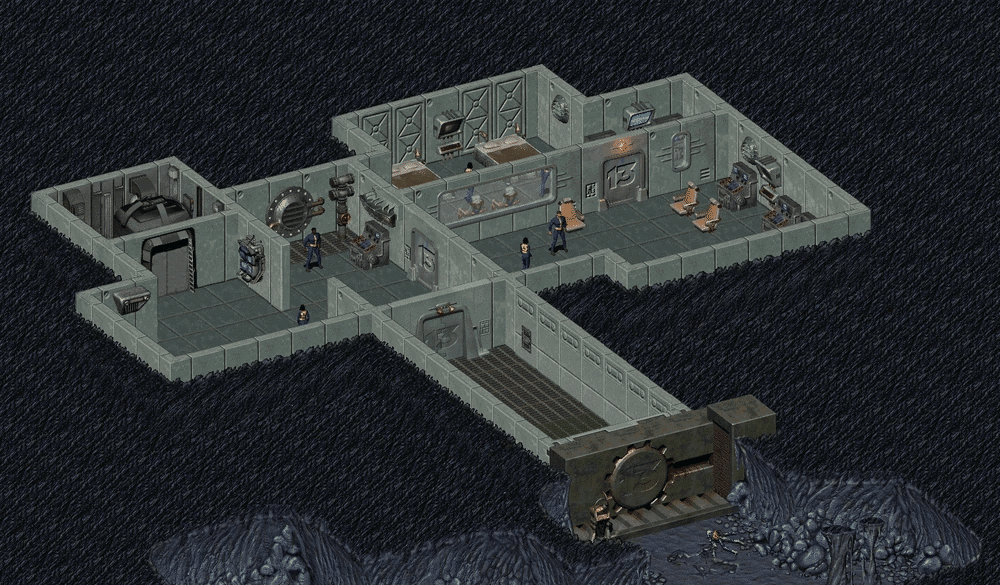
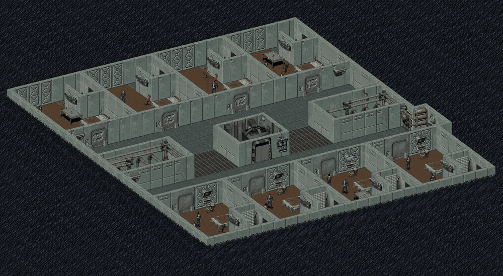
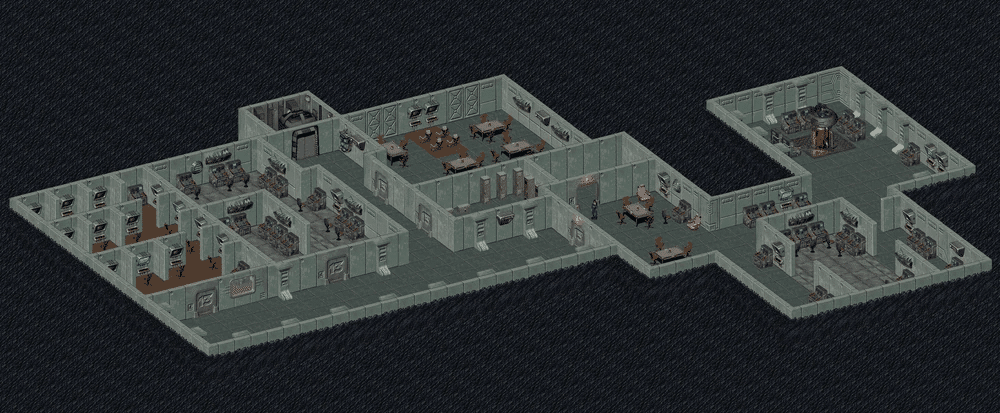
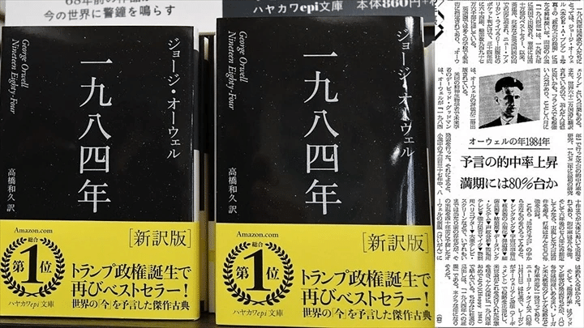

Vault 13

Vault 13、後にアロヨの部族の間で「聖なる13のVault」として知られる場所は、Vault-Tec 社の象徴的な Vault の一つです。
カリフォルニア州南部の、ポスト・アポカリプスの定住地であるシェイディ・サンズの西、マリポーサ軍事基地の東に建設されました。
この場所は、初代 Fallout および Fallout 2 の両方に主要なロケーションとして登場します。
背景
戦前
Vault 13 の建設は2063年8月に開始され、2069年3月に完成しました。
これは西海岸で最後に完成した Vault であり、地下200フィートに320万トンの土に覆われています。
当初の予算は4,000億ドルでしたが、最終的には6,450億ドルに達しました。
当初の計画では10年間の稼働が予定されており、100の居住区画で最大1,000人を収容可能でした。
Vault-Tec は居住者に Pip-Boy 2000 を支給し、太陽光をエネルギー源とする実験的な光電武器である ソーラー・スコーチャー も配備していました。
また、建設用の重機、持続可能な水耕農場、地下河川を水源とする浄水システムも備えていました。
Vault 13 は「社会保存プログラム」の対照群として指定されており、本来の目的は被験者がエンクレイヴによって必要とされるまで封印され続けることでした。
ウォーター・チップ危機

2161年12月より以前に、標準装備のウォーター・チップが故障し始めました。
当時の監督官は、交換用のチップを見つけるために住民を荒野へと送り出す決定を下しました。
最初に送られたタリアスはネクロポリスで捕らえられ、FEV に浸されてグールのような変異体となりました。
最終的に選ばれたのが、単に Vault居住者 (Vault Dweller) と呼ばれる男でした。
2161年12月5日、彼は10mmピストルとわずかな物資を持って旅立ちました。
彼は2162年にチップを持ち帰り、さらにはミュータント軍団のリーダーであるザ・マスターを倒し、マリポーサ軍事基地を破壊しましたが、帰還した彼は監督官によって追放されました。
英雄の存在が他の住民に外の世界への憧れを抱かせ、Vault の安寧を壊すことを恐れたためです。
エンクレイヴによる占領
2241年、Vault居住者の孫である選ばれし者が、村を救うための G.E.C.K. を求めて Vault 13 を探し出しました。
しかし、その年の初めに Vault 13 はエンクレイヴによって制圧されていました。
エンクレイヴは「オールクリア」信号を送信して扉を開けさせ、住民を捕らえてエンクレイヴ・オイルリグへと連行しました。
その後、証拠隠滅のために知能を持ったデスクローの群れが送り込まれましたが、リーダーのグルーサーは命令を拒絶し、Vault 内で平和的なコミュニティを築きました。
しかし、後にフランク・ホリイン率いる部隊が戻り、デスクローの群れと残っていた人間たちを全滅させました。
レイアウト
Vault 13 は標準的な Vault-Tec の3層構造を採用しています。

レベル1：入り口とクリニック
防爆扉、警備室、および医務室があります。
初代 Fallout ではここが冒険の開始地点となります。

レベル2：居住区
住民のための居住スペース、教室、運動場があります。
Fallout 2 では、ここに住んでいたデスクローたちの生活の痕跡が見られます。

レベル3：コマンドおよび生命維持
監督官のオフィス、メインフレーム・コンピュータ、浄水システム、および貯蔵庫があります。
ここには G.E.C.K. が保管されているロッカーが存在します。
注目の戦利品
ウォーター・チップ
初代 Fallout のメインクエストアイテムです
G.E.C.K. (Garden of Eden Creation Kit)
Fallout 2 のメインクエストアイテムです。ロッカーに保管されています
ソーラー・スコーチャー
特殊なエネルギー武器です。Fallout 2 の特殊なランダムエンカウンターで入手可能です
ナビコンピュータの部品
Fallout 2 でタンカーを修理するために必要な部品です
10mmピストル
冒険開始時に支給されます
Vault 13 ジャンプスーツ
登場作品
Vault 13 は、Fallout、Fallout 2 に登場し、Fallout 3、Fallout 4、Fallout 76 においても名前や設定が言及されています。
舞台裏
Vault 13 はシリーズの原点であり、多くの作品でその伝説が語り継がれています。

その番号「13」は欧米における不吉な数字としての皮肉が込められており、閉鎖的な警察国家としての描写は、ジョージ・オーウェルの小説『1984年』の影響を強く受けています。
解説
Vault 13 は、単なる出発地点ではなく、プレイヤーに「帰る場所の喪失」という重いテーマを突きつける場所でもあります。
英雄の追放: 命をかけて故郷を救った Vault居住者 が、政治的な理由（平穏の維持）で追い出される結末は、Fallout シリーズ特有の冷徹な世界観を決定づけました。
デスクローのコミュニティ: Fallout 2 で描かれた「言葉を話し、人間と共生しようとするデスクロー」の設定は、モンスターという枠組みを超えた深い物語性を持っています。
エンクレイヴの非道: 住民を「使い捨ての被験者」として拉致し、用済みとなればデスクローを放って抹殺しようとしたエンクレイヴの行動は、彼らがなぜシリーズ最大の敵対勢力の一つであるかを如実に示しています。
This article uses material from the “Endor” article on the Fallout wiki at Fandom and is licensed under the Creative Commons Attribution-Share Alike License.
コミュニティ維持のため、寄付を受け付けております。
> COMMENTS